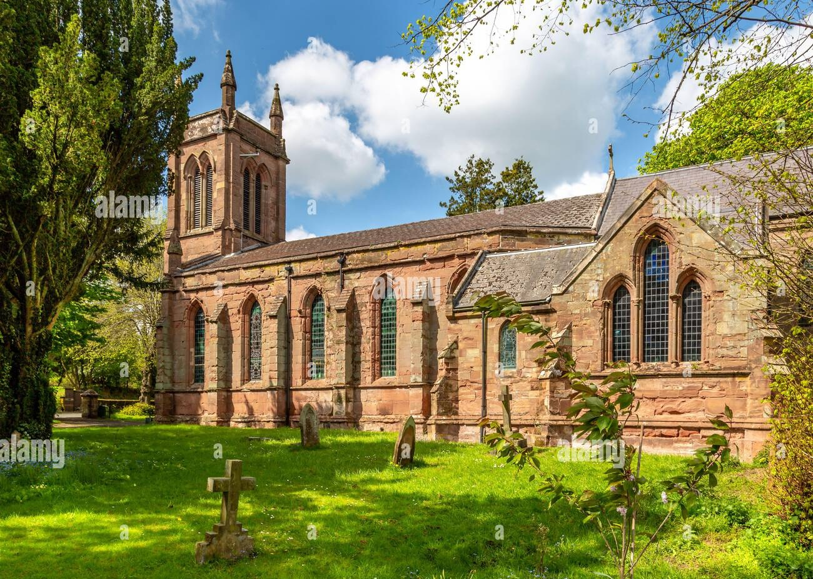

Why We Give
It costs over £1,000 every single week just to keep Christ Church open, warm, insured, and functioning. We do not receive central government funding for our day-to-day running costs.
Every donation, big or small, helps us provide a spiritual home, run community initiatives like Catshill Connect, and tackle major preservation projects—like the ongoing repairs to our historic Chancel roof.
Regular Giving
Setting up a regular monthly standing order is the most helpful way to support us, allowing us to plan our parish finances and community outreach with confidence.
Contact Office for DetailsOnline Transfer
You can make a direct, one-off bank transfer securely from your own banking app. Please contact us for the parish bank account details.
Request Bank DetailsIn Person
We still happily accept cash or cheque donations during our Sunday services or when the church is open for private prayer on Tuesday mornings.
Are you a UK Taxpayer?
If you pay UK income tax, we can claim an extra 25p for every £1 you give at no extra cost to you, through the government's Gift Aid scheme. This makes a massive difference to our parish income.
Please ask for a Gift Aid form when you make your donation.

Leaving a Legacy
Much of the history and fabric of Christ Church survives today because of the generosity of past generations who chose to leave a gift to the church in their will.
Once you have made provision for your loved ones, a legacy left to the church is a wonderful way to ensure that our worship and community work in Catshill continues for future generations.
Contact us to discuss leaving a legacy